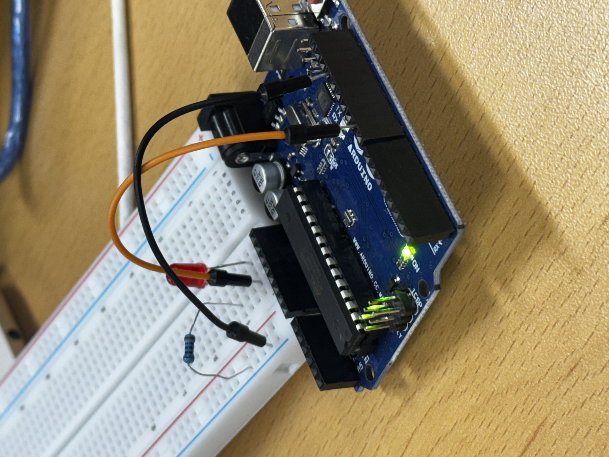
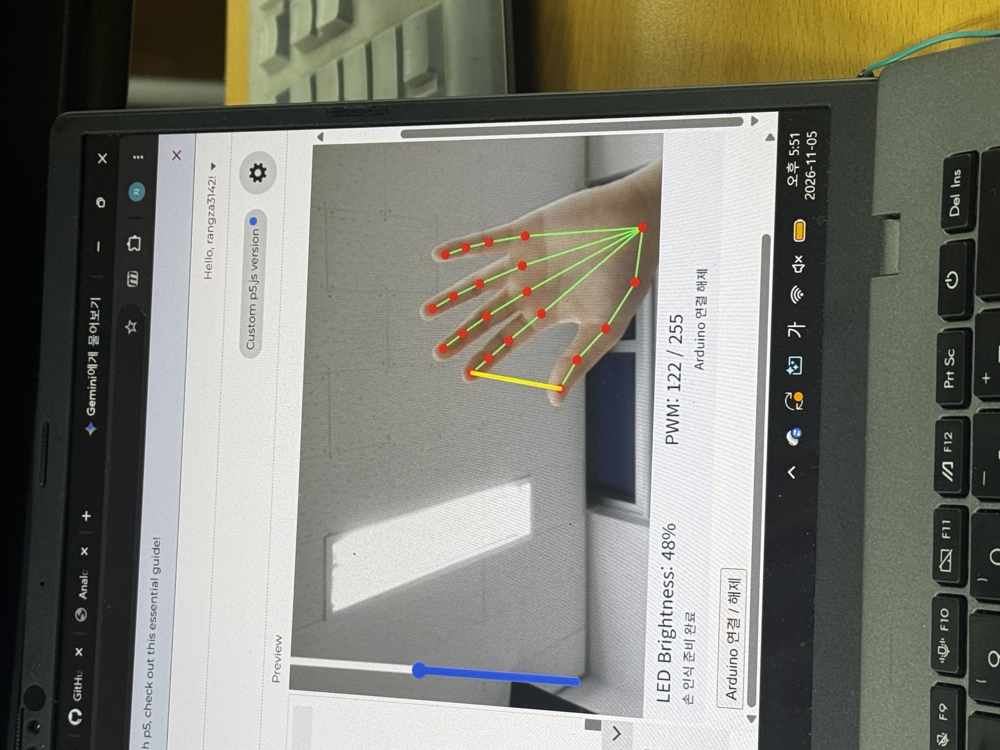

p5.js / Arduino UNO R3 · 제작 기록
손가락 간격을 이용한 LED 밝기 조절
지난번에는 마우스로 슬라이더를 움직여 LED 밝기를 조절했다. 이번에는 웹캠으로 손을 인식하고 엄지와 집게손가락 사이의 거리에 따라 슬라이더가 움직이도록 만드는 과제다.
01.제작 목적
p5.js와 ml5.js의 HandPose 기능으로 손가락 위치를 인식하고, 엄지와 집게손가락 사이의 거리를 슬라이더 값으로 바꾸는 것이 이번 과제의 목표다. 슬라이더 값을 Arduino UNO에 보내 LED 밝기도 함께 조절하도록 구성했다.
LED는 지난 과제에서 사용한 3번 PWM 핀에 연결하고, 카메라는 컴퓨터의 웹캠을 이용한다.
02.작동 영상
손가락을 가까이 모으거나 벌렸을 때 슬라이더와 LED 밝기가 어떻게 바뀌는지 확인할 수 있는 영상이다.
03.구상 스케치 및 연결 사진
손가락을 움직였을 때 LED가 반응하도록 구상한 내용과 아두이노 배선 사진을 정리했다.


연결 방법
| 부품 | 연결 위치 |
|---|---|
| LED (+) | 저항(220~330Ω)을 거쳐 Arduino UNO의 ~3 핀 |
| LED (-) | Arduino UNO의 GND |
| 웹캠 | 컴퓨터에 연결 (아두이노에 연결하지 않음) |
p5.js 실행 화면
HandPose로 인식한 손의 관절과 왼쪽 세로 슬라이더가 표시되는 화면이다.

04.소스코드
p5.js에서는 HandPose로 엄지와 집게손가락 끝을 인식하고, 두 손가락의 거리를 LED 밝기 값으로 변환했다. Arduino UNO에서는 시리얼 통신으로 받은 값을 3번 핀의 PWM 출력에 적용했다.
p5.js 코드 (sketch.js)
let handPose, video, slider;
let hands = [];
let connections = [];
let port = null;
let writer = null;
let connectButton;
let fingerDistance = 0;
let smoothValue = 0;
let manualUntil = 0;
let sending = false;
let connecting = false;
let lastSent = -1;
let lastSendTime = 0;
let statusText = "Arduino 연결 안 됨";
let modelStatus = "손 인식 모델 로딩 중";
// 카메라 해상도
const CAM_W = 480;
const CAM_H = 360;
// 화면에 표시할 크기
const VIEW_W = 640;
const VIEW_H = 480;
// 1. 처음 한 번 실행
async function setup() {
createCanvas(640, 540);
frameRate(30);
// 세로 슬라이더
slider = createSlider(0, 100, 0, 1);
slider.style("writing-mode", "vertical-lr");
slider.style("direction", "rtl");
slider.style("height", "350px");
slider.style("width", "22px");
slider.position(15, 65);
slider.input(updateSliderValue);
// Arduino 연결 버튼
connectButton = createButton("Arduino 연결 / 해제");
connectButton.position(15, 550);
connectButton.mousePressed(toggleArduino);
// 카메라 실행
video = createCapture(VIDEO);
video.size(CAM_W, CAM_H);
video.hide();
// ml5.js 확인
if (typeof ml5 === "undefined") {
modelStatus = "ml5 라이브러리 로딩 실패";
return;
}
try {
handPose = await ml5.handPose({
maxHands: 1,
modelType: "lite"
});
connections = handPose.getConnections();
handPose.detectStart(video, gotHands);
modelStatus = "손 인식 준비 완료";
} catch (error) {
modelStatus = "HandPose 모델 오류";
console.error(error);
}
}
// 2. 계속 반복 실행
function draw() {
background(240);
// 거울처럼 카메라 화면 표시
if (video && video.elt.readyState >= 2) {
push();
translate(VIEW_W, 0);
scale(-1, 1);
image(video, 0, 0, VIEW_W, VIEW_H);
pop();
} else {
fill(0);
textSize(20);
text("카메라 준비 중...", 200, 230);
}
// 손 관절 표시
drawSkeletons();
drawKeyPoints();
if (hands.length > 0) {
let hand = hands[0];
let thumb = hand.keypoints[4];
let index = hand.keypoints[8];
if (thumb && index) {
// 실제 카메라 좌표에서 손가락 거리 계산
fingerDistance = dist(
thumb.x, thumb.y,
index.x, index.y
);
// 화면 좌표로 변환
let tx = screenX(thumb.x);
let ty = screenY(thumb.y);
let ix = screenX(index.x);
let iy = screenY(index.y);
// 엄지와 검지 사이 노란색 선
stroke(255, 230, 0);
strokeWeight(4);
line(tx, ty, ix, iy);
// 손가락 거리 → 0~100%
let target = map(
fingerDistance,
15, 130,
0, 100,
true
);
// 슬라이더 반응 속도 개선
if (millis() > manualUntil) {
smoothValue = lerp(
smoothValue,
target,
0.7
);
slider.value(round(smoothValue));
}
}
} else if (millis() > manualUntil) {
// 손이 사라지면 LED 끄기
smoothValue = lerp(smoothValue, 0, 0.7);
slider.value(round(smoothValue));
}
// 슬라이더 값
let percent = Number(slider.value());
let brightness = round(
map(percent, 0, 100, 0, 255)
);
// 화면 하단
noStroke();
fill(235, 242, 250);
rect(0, 480, 640, 60);
fill(25, 40, 60);
textAlign(LEFT);
textSize(17);
text("LED Brightness: " + percent + "%", 15, 505);
text("PWM: " + brightness + " / 255", 250, 505);
textSize(12);
text(modelStatus, 15, 527);
text(statusText, 320, 527);
// Arduino로 밝기 전송
if (
writer &&
!sending &&
brightness !== lastSent &&
millis() - lastSendTime >= 70
) {
lastSendTime = millis();
sendBrightness(brightness);
}
}
// 3. 카메라 좌표 → 화면 좌표
function screenX(x) {
return VIEW_W - x * VIEW_W / CAM_W;
}
function screenY(y) {
return y * VIEW_H / CAM_H;
}
// 4. 손 인식 결과 저장
function gotHands(results) {
hands = results;
}
// 5. 손 관절 연결선 표시
function drawSkeletons() {
for (let hand of hands) {
for (let connection of connections) {
let a = hand.keypoints[connection[0]];
let b = hand.keypoints[connection[1]];
if (!a || !b) continue;
stroke(30, 230, 100);
strokeWeight(2);
line(
screenX(a.x), screenY(a.y),
screenX(b.x), screenY(b.y)
);
}
}
}
// 6. 손 관절 빨간 점 표시
function drawKeyPoints() {
for (let hand of hands) {
for (let point of hand.keypoints) {
noStroke();
fill(255, 30, 30);
circle(screenX(point.x), screenY(point.y), 9);
}
}
}
// 7. 수동 슬라이더 조절
function updateSliderValue() {
smoothValue = Number(slider.value());
manualUntil = millis() + 1500;
}
// 8. Arduino 연결 / 해제
async function toggleArduino() {
if (connecting || sending) return;
if (!("serial" in navigator)) {
statusText = "Web Serial 미지원";
alert("Chrome 또는 Edge를 사용하세요.");
return;
}
connecting = true;
try {
if (port) {
// 연결 해제
if (writer) {
writer.releaseLock();
writer = null;
}
await port.close();
port = null;
statusText = "Arduino 연결 해제";
lastSent = -1;
} else {
// Arduino 연결
port = await navigator.serial.requestPort();
await port.open({ baudRate: 9600 });
statusText = "Arduino 준비 중";
// UNO 리셋 대기
await new Promise(resolve => setTimeout(resolve, 1800));
writer = port.writable.getWriter();
lastSent = -1;
statusText = "Arduino 연결 성공";
}
} catch (error) {
statusText = "연결 오류: " + error.message;
console.error(error);
if (writer) {
try { writer.releaseLock(); } catch (e) {}
writer = null;
}
if (port) {
try { await port.close(); } catch (e) {}
port = null;
}
} finally {
connecting = false;
}
}
// 9. LED 밝기 전송
async function sendBrightness(value) {
if (!writer || sending) return;
sending = true;
try {
await writer.write(new Uint8Array([value]));
lastSent = value;
} catch (error) {
statusText = "전송 오류: " + error.message;
console.error(error);
} finally {
sending = false;
}
}Arduino IDE 코드
const int LED_PIN = 3;
void setup() {
pinMode(LED_PIN, OUTPUT);
Serial.begin(9600);
analogWrite(LED_PIN, 0);
}
void loop() {
if (Serial.available() > 0) {
int brightness = Serial.read(); // p5.js에서 받은 0~255 바이트
analogWrite(LED_PIN, brightness);
}
}05.동작 원리
- 웹캠에서 손의 모습을 받아온다.
- HandPose로 손의 관절 위치를 인식한다.
- 엄지와 집게손가락 끝 사이의 거리를
dist()로 계산한다. - 거리 값을
map()으로 바꿔 세로 슬라이더에 반영한다. - 변환된 값을 시리얼 통신으로 Arduino UNO에 보내 LED 밝기를 조절한다.
손가락 간격이 작아지면 LED가 어두워지고, 간격이 커지면 밝아지도록 설정했다. LED 밝기 값은 0~255 범위로 사용한다.
06.결과 및 느낀 점
웹캠으로 엄지와 집게손가락 사이의 거리를 인식하고, 손가락 간격에 따라 슬라이더와 실제 LED 밝기가 변하는 동작을 확인했다. 처음에는 ml5.js 라이브러리를 불러오는 과정에서 오류가 있었고, 손 관절 표시가 늦게 따라오는 문제도 있었지만 코드를 수정하여 시연을 완료했다.
기존 과제에서는 마우스로 슬라이더를 직접 조절했지만, 이번에는 손동작으로 LED 밝기를 제어할 수 있었다.